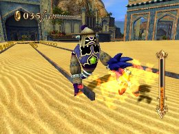
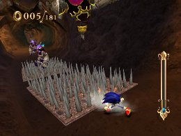
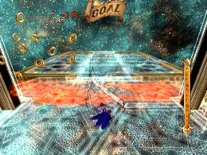
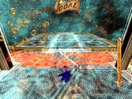

Mission Conditions and Effective Skills
Advanced Strategies
Each world contains several missions that have the same conditions as those in other worlds. For missions with the same conditions, the same set of skills is often effective. An explanation of those mission conditions and effective skills follows.
“Defeat Enemies !” missions
You can clear these missions by defeating the set number of Enemies.
You can use Homing Attack as your primary attack most of the time, but using skills like Fire Gaze, Fire Tackle and Volcano Slider that add attack damage to normal moves lets you proceed more efficiently.
 Fire Gaze
Fire Gaze
Fire Tackle
Volcano Slider
――――――――――――――――――――――――――――――――――――――――
“Don’t defeat enemies!” mission

You can clear these missions by making it through the stage without defeating any Enemies. Areas where you can run right by enemies aren’t too difficult, but when enemies block your path you need to jump to avoid them. And since lock-on cursors still appear, it’s all too easy to do a Homing Attack by mistake.
――――――――――――――――――――――――――――――――――――――――
“Don’t get defeated!” mission
You can clear these missions by making it to the goal without falling or taking damage when you have no Rings. Skills that help you avoid losing Rings, like Ring Bonus and Ring Saver, are useful here.
 Ring Saver
Ring Saver
――――――――――――――――――――――――――――――――――――――――
“Collect Rings!” mission
You can clear these missions by collecting the set number of Rings. To save time, equip Ring Bonus so you can start with a few more Rings at the beginning of the mission.
 Ring Bonus
Ring Bonus
In the “Use Back Step to collect 10 Rings” mission in the Lost Prologue, however, the Ring Bonus Rings won’t count, since only Rings collected with Back Step are counted.
――――――――――――――――――――――――――――――――――――――――
“Beat Uhu to the goal!” mission
You can clear these missions by making it to the goal before the blue, glowing Uhu. These are racing missions, so choose your skills with an emphasis on speed, and use Speed Break to jump ahead of the competition.
――――――――――――――――――――――――――――――――――――――――
“Finish within X seconds!” mission
You can clear these missions by making it to the goal within the allotted time limit. These missions are similar to time attacks in a racing game, so choose your skills with an emphasis on speed, and use Speed Break to blast through portions of the stage and cut your time.
――――――――――――――――――――――――――――――――――――――――
“Don’t get any Pearls!” mission
You can clear these missions by making it to the goal without picking up any Pearls. Even if you don’t have any skills equipped, Pearls are slightly attracted to Sonic, so very precise controls will be required.
Since you cannot collect Pearls, you will be unable to charge the Soul Gauge and use Time Break. As a result, you will need to use Quick Step-type skills, Full Break and Charge Jump (to take advantage of the stopped state while charging) to help you maintain a high level of control.
――――――――――――――――――――――――――――――――――――――――
“Don’t take damage!” mission
You can clear these missions by making it to the goal without taking damage even once.
You cannot take damage, so using speed-type skills is risky. It will be important to use Time Break well to maintain precise control.
Also, advanced players can take advantage of Aegis Slider’s invincibility while sliding, the Skimmer-type skills’ lengthened sliding distance, and the Slide-type skills’ improved movements while sliding.

――――――――――――――――――――――――――――――――――――――――
“Finish with 0 Rings!” mission
You can clear these missions by arriving at the goal carrying zero Rings—this doesn’t mean that you cannot collect any Rings during the mission. No matter how many Rings you collect, you can take damage from Enemies or traps to get rid of them, and still clear the mission with relative ease.
 

If you’re trying to get a good score, however, advanced players can equip Ring Exchange to convert collected Rings into Pearls.
――――――――――――――――――――――――――――――――――――――――
“Get an X-Ring chain!” mission
You can clear these missions by collecting a set number of Rings in a chain. To create a chain of rings, you must first collect 20 Rings in a row. After you collect 20 Rings the counter will start, but unless you pick up the next Ring before the time limit shown on the screen, the count will end, and the chain will be broken. You must then start over unless you have already collected the required number of Rings.
To collect Rings in a row, useful tactics include using Speed Break to collect large swaths of Rings at once, or using Time Break to make sure you don’t miss any Rings.
One thing to watch out for: even after you have collected the required number of Rings, the mission will continue as long as you keep collecting Rings. To get the best possible time, make sure you stop collecting Rings as soon as you reach the required number.
Super Play
PIRATE STORM
Chain of Rings "Get a 100-Ring Chain!"
You need 100 chains to complete the mission,
but this gameplay shows you how to take over 200 chains.
« Strategies for the long courses you play first in each world | Advanced Strategies | Earning Experience Points »